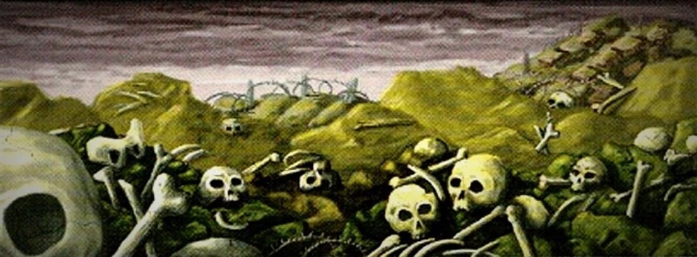

Isstvan III
| Isstvan III | |
|---|---|
| Isstvan III Atrocity, part of the Horus Heresy | |
 Pict-capture of the fighting in the ruins of the Choral City | |
| Date | 005.M31 |
| Location | Isstvan III, Isstvan system, Segmentum Obscurus |
| Result | Planet destroyed; loyalist survivors annihilated after some two months; the first open act of the Heresy |
| Belligerents | |
| Loyalists Loyal warriors of the Sons of Horus, Emperor's Children, World Eaters and Death Guard | Traitors Warmaster Horus Sons of Horus Emperor's Children World Eaters Death Guard Rebels of Baron Vardus Praal |
| Commanders and leaders | |
| Saul Tarvitz Garviel Loken Tarik Torgaddon Ehrlen Nathaniel Garro | Horus Fulgrim Mortarion Angron Captain Lucius |
| Casualties and losses | |
| About eight billion inhabitants killed by the Life-Eater virus; all loyalist Astartes on the surface eventually killed; heavy losses among the traitor Legions | |
Isstvan III (also spelled Istvaan III in older records) was a civilised world in the Isstvan system, near the Segmentum Obscurus. In 005.M31 its eight billion inhabitants were killed by a virus weapon at the order of the Warmaster Horus, who used the operation as the pretext to purge loyalists from the four Legions under his command. The Isstvan III Atrocity was the first open act of the Horus Heresy, and the survivors of the purge fought on the ruined world for two months before they were crushed.[1][2]
The world is a dead sphere of ash and bone, uninhabited and barren, under a poisoned sky. Imperial charts record it as a quarantined region, and no Imperial vessel is permitted to land. Its name is used in the Imperial Cult as a byword for treachery.[3]
History
[edit]Before the Heresy
[edit]The Isstvan system was settled long before the Great Crusade, and had several habitable worlds, which the Mechanicum's biologists judged to have been terraformed in a forgotten age. The third planet, Isstvan III, held a thriving human population that had grown up over the ruins of a long-dead alien civilisation during the Age of Strife. It was brought into compliance during the Great Crusade, in 994.M30, by the Raven Guard, and was assessed as a civilised world with a tithe of the lowest grade. Its capital was a vast city, the Choral City, noted for its architecture and its music.[1]
Rebellion of Praal
[edit]In about 005.M31 the planetary governor, Baron Vardus Praal, declared against the Imperium. Imperial records say that the cult of Slaanesh had been working among his court for some time. The Emperor and the Council of Terra, ignorant of the real situation in the Warmaster's retinue, ordered Horus to put the rebellion down, and Horus gathered four Legions at the Isstvan system: his own Sons of Horus, Fulgrim's Emperor's Children, Mortarion's Death Guard and Angron's World Eaters.[1]
The atrocity
[edit]The purge
[edit]Horus had already turned from the Emperor, as had Fulgrim, Mortarion and Angron, and saw in the expedition a way to rid his forces of every warrior who might oppose him. The suspected loyalists in the four Legions were sent to the surface in drop-pods, with their orders given only in the final hour. They were forbidden gunships, cut off from the fleet, and told to take the Choral City. When the landings were complete, the Warmaster's fleet released virus bombs of the Life-Eater strain on the planet. The virus consumed every living thing and rotted the soil. In the span of hours some eight billion people were dead, and every loyalist Astartes who could not reach an airtight shelter was killed with them. By some accounts the death of the planet registered in the Warp as a scream brighter than the Astronomican to those with the sight.[1]

One officer saved some of them. Captain Saul Tarvitz of the Emperor's Children, acting on a premonition, had remained with the fleet and saw the virus bombs being armed. He seized a gunship and flew to the surface to warn his brothers, and a few hundred loyalists reached shelter in time.[1]
The battle in the ruins
[edit]The survivors, led by Tarvitz, Garviel Loken and Tarik Torgaddon of the Sons of Horus and Ehrlen of the World Eaters, took refuge in the ruins of the Choral City. As the planet's atmosphere filled with the gases of the rotting biosphere, Horus's flagship burned the world with a firestorm that melted the hive-cities. Angron, enraged at being denied the slaughter, led the World Eaters to the surface against the Warmaster's orders. The Warmaster's other Legions followed rather than lose the World Eaters to a bombardment. The loyalists fought for two months, helped by hurricanes that prevented the traitors from landing heavy weapons. They were destroyed at last, helped by the treachery of Captain Lucius of the Emperor's Children and by a final bombardment, but they had cost the traitors a heavy toll.[1][2]
The flight of the Eisenstein
[edit]While the battle raged, a small group of loyalists led by the Death Guard Battle-Captain Nathaniel Garro seized the frigate Eisenstein and fled into the Warp. The voyage was a perilous one, with the ship repeatedly attacked by the Warp's entities, and its crew was reduced to a handful. Garro reached Terra and delivered his report to the Emperor and his regent, Malcador the Sigillite, who ordered the seven Legions to Isstvan V that would meet their end in the Drop Site Massacre.[4]
Aftermath
[edit]
The Warmaster's treachery cost his Legions hundreds of warriors, but it ensured that the Legions that remained would follow him. Horus left Isstvan III for Isstvan V, where he prepared the second trap. The world itself remained empty. Later accounts record that a Dreadnought of the Emperor's Children, Ancient Rylanor, survived the bombardment beneath the ruins of the Precentor's Palace and lived on there for millennia, lured Fulgrim back to Isstvan III by a beacon and tried to kill him with an unexploded virus bomb. Imperial accounts describe the event with caution, since the report is based on testimony from Heretic Astartes.[3][5]
Legacy
[edit]Isstvan III is regarded as the point at which the Horus Heresy became a war. The Imperium commemorates its victims as the first martyrs of the revolt, and the Chapters descended from the loyalist Legions keep a day of mourning for the world. Surviving accounts of the atrocity form the basis of the Imperial law against the use of virus weapons on inhabited worlds.[3]
Timeline
[edit]| Date | Event |
|---|---|
| 994.M30 | The Isstvan system is brought into compliance by the Raven Guard under Corvus Corax. |
| c. 004.M31 | The cult of Slaanesh spreads through the court of Baron Vardus Praal.[a] |
| 005.M31 | Praal declares against the Imperium; the Council of Terra orders Horus to suppress him. |
| 005.M31 | Horus gathers the Sons of Horus, Emperor's Children, Death Guard and World Eaters at Isstvan. |
| 005.M31 | Loyalist companies land at the Choral City; the fleet releases Life-Eater virus bombs and some eight billion die. |
| 005.M31 | Nathaniel Garro seizes the frigate Eisenstein and flees for Terra. |
| 005.M31 | Angron leads the World Eaters to the surface; the battle in the ruins begins. |
| 005.M31 | After some two months the last loyalists under Saul Tarvitz and Garviel Loken are overrun. |
| 005–006.M31 | Garro reaches Terra; Rogal Dorn and Malcador the Sigillite send seven Legions to Isstvan V. |
| 006.M31 | The Drop Site Massacre on Isstvan V. |
| 014.M31 | The war ends at the Siege of Terra; Isstvan III is left a quarantined dead world. |
See also
[edit]Notes
[edit]- ^ Date estimated from the sequence of events.
References
[edit]- ^ a b c d e f Reports of the Isstvan System (c. 008.M31). Fleet Command, Terra.
- ^ a b Chronicles of the Heresy (sealed). Logos Historica Verita, Terra.
- ^ a b c Liber Ecclesiasticus (M37). Adeptus Ministorum.
- ^ Garro, Nathaniel (c. 007.M31). Testimony of the Eisenstein. Office of the Sigillite.
- ^ Lexicanum Martialis. Officio Militaris.